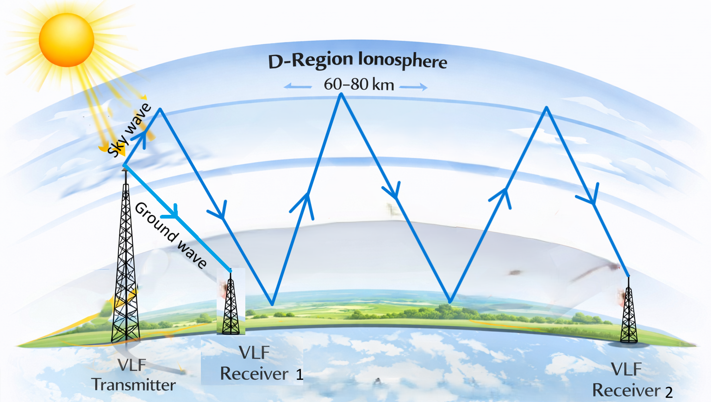

The ionosphere is a stratified plasma whose electron density changes with altitude, time of day, season and solar activity. Because of this, it can strongly influence the propagation of electromagnetic waves. Radio waves may be reflected, refracted, bent or absorbed depending on their frequency and the characteristics of the ionospheric medium.
Among the different radio-frequency bands used for ionospheric studies, Very Low Frequency (VLF) radio waves are particularly interesting. Their ability to propagate over very large distances makes them valuable for communication as well as for investigating the lower ionosphere.
A VLF signal is not merely a radio transmission. As it travels through the Earth–ionosphere waveguide, it continuously interacts with the ionosphere and therefore carries information about the medium through which it has propagated.
Electromagnetic Waves and the Ionosphere
Classical Maxwellian theory describes electromagnetic radiation as a transverse wave consisting of mutually perpendicular electric and magnetic field vectors. For large-scale radio propagation through the atmosphere and ionosphere, the behaviour of electromagnetic waves can be considered using both a wave model and a ray model.
The wave description is useful for understanding interference and modal behaviour, while the ray description provides an intuitive picture of reflection, refraction and bending. For the present discussion, the ray model provides the basic physical picture of ionospheric radio propagation.
The theoretical treatment presented here is adapted from the ionospheric radio-propagation chapter of Chakraborty's PhD thesis (2026).
A Simple Beginning: Ionosphere Without a Magnetic Field
The actual ionosphere exists within the Earth's magnetic field. However, a useful first step is to consider the simplified case in which the geomagnetic field is neglected. This treatment is commonly associated with the Eccles–Larmor theory.
Consider a horizontally stratified ionosphere in which the electron density increases with altitude. Suppose a plane-polarised electromagnetic wave produces an oscillating electric field
where E0 is the amplitude of the electric field and ω is its angular frequency.
The electric field causes the free electrons to oscillate. Neglecting collisions for this simplified treatment, the equation of motion of an electron can be written as
The resulting electron motion contributes a conduction current. At the same time, the changing electric field produces a displacement current. Their combined effect can be expressed through an effective permittivity of the ionised medium.
Plasma Frequency
The presence of free electrons changes the effective dielectric properties of the ionosphere. In the simplified unmagnetised case, the relative permittivity can be written as
Here ωp is the plasma frequency, the natural oscillation frequency associated with the collective motion of electrons in the plasma.
In its standard form, the plasma frequency is
where Ne is the electron density, e is the electron charge, me is the electron mass and ε0 is the permittivity of free space.
Plasma frequency depends on electron density. Since electron density varies with altitude, the plasma frequency also varies with altitude. This is one of the fundamental reasons why radio waves of different frequencies interact with different regions of the ionosphere.
Refractive Index and Bending
The phase velocity of an electromagnetic wave in the simplified ionospheric plasma is
Consequently, the refractive index becomes
As electron density changes with altitude, so does the refractive index. According to Snell's law, a gradual change in refractive index causes the direction of propagation of a radio ray to change.
Thus, rather than being reflected from a perfectly sharp boundary, a radio wave propagating through a continuously stratified ionosphere can gradually bend as it moves through regions of changing electron density.
Under suitable conditions the ray eventually turns around and returns towards the Earth's surface. Since the plasma frequency depends on electron density and the wave frequency appears explicitly in the refractive index, different radio frequencies can interact with different altitude regions.
The Real Ionosphere: The Earth's Magnetic Field
The simplified treatment above neglects one of the most important physical properties of the actual ionosphere: the Earth's magnetic field.
In the presence of a magnetic field, the equation of motion of an electron becomes
The magnetic field causes electrons to gyrate around magnetic field lines. Consequently, the ionosphere becomes an anisotropic medium, meaning that the response of the medium depends on the direction of wave propagation relative to the geomagnetic field.
The combined effects of electron density, magnetic field and wave frequency were described by Edward Victor Appleton and Douglas R. Hartree in what is now known as the Appleton–Hartree theory.
Appleton–Hartree Theory
In the magnetised ionosphere, the dielectric response cannot be represented by a single scalar quantity. Instead, it is described using a dielectric tensor.
The Appleton–Hartree formulation introduces several dimensionless parameters that describe the relative importance of plasma oscillation, magnetic gyration and collisions.
Plasma frequency
Describes the natural collective oscillation frequency of the electrons and depends on electron density.
Gyrofrequency
Represents the characteristic frequency of electron gyration around the Earth's magnetic field.
Collision frequency
Represents the frequency of collisions between electrons and atmospheric particles and becomes especially important in the lower ionosphere.
Propagation angle
The angle between the wave propagation direction and the geomagnetic field determines the magneto-ionic response.
Two useful limiting cases are the quasi-longitudinal (QL) and quasi-transverse (QT) approximations. The QL case corresponds approximately to propagation along the magnetic field, while the QT case corresponds approximately to propagation perpendicular to it.
Collisions and Absorption
At lower ionospheric altitudes, the neutral atmospheric density is much higher than in the upper ionosphere. Free electrons therefore undergo frequent collisions with neutral molecules.
These collisions are particularly important for VLF propagation because they cause absorption of the radio wave. Part of the energy carried by the electromagnetic wave is transferred to the medium through collisional processes, resulting in signal attenuation.
The collision frequency changes strongly with altitude. Consequently, radio waves interacting with different ionospheric regions experience different amounts of absorption.
This is one of the reasons why the D-region is so important for VLF research: it is not simply a reflecting layer. Its electron density and collision environment determine how strongly a VLF signal is absorbed.
The Earth–Ionosphere Waveguide
The Earth's surface and the lower ionosphere together form a natural waveguide known as the Earth–Ionosphere Waveguide (EIWG).
The Earth acts approximately as the lower boundary of this waveguide, while the ionosphere forms the upper boundary.

When a VLF transmitter radiates a signal, part of the energy travels close to the Earth's surface as a ground wave. Another component travels upward as a sky wave and interacts with the ionosphere.
The sky wave can return towards the Earth's surface and may subsequently undergo further reflections between the Earth and ionosphere. Through this mechanism, VLF signals can propagate beyond the horizon and travel distances of thousands of kilometres with relatively low attenuation.
The Skip Zone
The propagation of a VLF signal does not necessarily produce uniform coverage everywhere along the ground. There can be regions where neither the direct ground wave nor the first-order reflected sky wave provides significant signal strength.
Such a region is known as a skip zone. The position and extent of this region depend on the propagation geometry and the prevailing ionospheric conditions.
Why the D-Region Matters for VLF
Although the D-region contains far fewer free electrons than the E- and F-regions, it plays a disproportionately important role in VLF propagation.
The lower D-region contains a relatively dense neutral atmosphere. Consequently, electron-neutral collision frequencies are high and collisional absorption of VLF waves becomes significant.
During daytime, solar radiation increases D-region ionization. The resulting changes in electron density and collision frequency modify VLF absorption and propagation conditions.
At night, the reduction in solar ionization causes the D-region electron density to decrease, producing a substantially different propagation environment.
Day–Night Variations in VLF Propagation
One of the most obvious signatures in VLF observations is the difference between daytime and nighttime propagation.
During daylight, solar radiation produces additional ionization in the D-region. The enhanced electron density changes the reflection and absorption characteristics of the Earth–ionosphere waveguide.
After sunset, ion production decreases while recombination and attachment processes become more important. The lower ionosphere consequently evolves into a different propagation environment.
This strong diurnal dependence makes VLF signals a useful tool for studying the lower ionosphere.
VLF as a Detector of Solar Flares
The sensitivity of the D-region to solar radiation provides a powerful opportunity for remote sensing.
During a solar flare, the Sun can suddenly emit enhanced X-ray and EUV radiation. These photons reach the Earth and rapidly increase ionization in the lower ionosphere.
The resulting change in D-region electron density modifies the propagation conditions of VLF waves. A receiver on Earth can therefore detect a disturbance caused by an event occurring approximately 150 million kilometres away.
We observe how the radio signal changes, and from that change we infer how the lower ionosphere has changed.
The Transmitter–Receiver Great-Circle Path
VLF signals between a transmitter and receiver propagate primarily along the great-circle path (GCP), representing the shortest path between the two locations on the Earth's surface.
If the transmitter and receiver have geographical coordinates (latTx, lonTx) and (latRx, lonRx), the angular separation can be written as
The corresponding propagation distance along the great-circle path is
where RE is the Earth's radius.
Why the Propagation Path Must Be Considered
The ionosphere is not uniform along a long transmitter–receiver path. Solar zenith angle, electron density and other ionospheric parameters can vary significantly from one location to another.
For numerical modelling, the great-circle path can therefore be divided into a number of smaller segments. The ionospheric conditions of each segment can then be incorporated into the propagation calculation.
Such segmentation becomes especially important when the propagation path crosses the day–night boundary or when a solar disturbance affects only a portion of the path.
In Summary
VLF propagation is the result of a complex interaction between electromagnetic waves and the ionised, magnetised and collisional environment of the lower ionosphere.
The Earth and ionosphere form a natural waveguide that allows VLF signals to travel thousands of kilometres. The properties of this waveguide depend on electron density, collision frequency, solar illumination, geomagnetic conditions and propagation geometry.
Because the lower ionosphere responds to solar and geophysical disturbances, VLF signals provide a powerful method of remotely monitoring the D-region.
In VLF remote sensing, the radio signal itself becomes the probe with which we investigate a region of the atmosphere that is otherwise very difficult to observe directly.
References
Appleton, E. V. (1932). Magneto-ionic theory of radio-wave propagation.
Eccles, W. H. (1912). Early theoretical treatment of ionospheric radio-wave propagation.
Larmor, J. (1924). Electromagnetic theory of ionospheric propagation.
Barr, R. (1970). Studies of VLF radio-wave absorption in the lower ionosphere.
Barr, R. (2000). VLF radio propagation and ionospheric absorption.
Soloviev, O. V. (1997). Long-distance propagation of VLF radio waves.
Thomson, N. R. (2007). VLF propagation and the lower ionosphere.
Chakraborty, S. (2026). PhD Thesis, University of Calcutta. Material adapted from the chapter on ionospheric radio propagation.